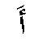

![[INDICE]](img/back.gif)
hamza
Secondo genere vocale. Esistono quattro forme della Hamza, tale forma è decisa dal Tashkiil della Hamza medesima
e da quello della lettera immediatamente precedente.
Quando la Hamza viene all'inizio della parola, essa è sempre scritta sopra o sotto una Alif, secondo il Tashkiil:
- se si tratta di una Fatha o una Damma allora la Hamza è scritta sopra la Alif.
- se il Tashkiil è una Kasra allora la Hamza è scritta sotto la Alif.
Hamza con Fatha

Usata con la Fatha si pronuncia "A"
.
Hamza con Damma
Usata con la Damma si pronuncia "U"
.
Hamza con Kasra
Usata con la Kasra si pronuncia "I"
.
Hamza con Waw
Usata con la lettera Waw si pronuncia "U"
.
Hamza con Yea
Usata con la lettera Waw si pronuncia "I"
e la Yea perde i 2 punti.